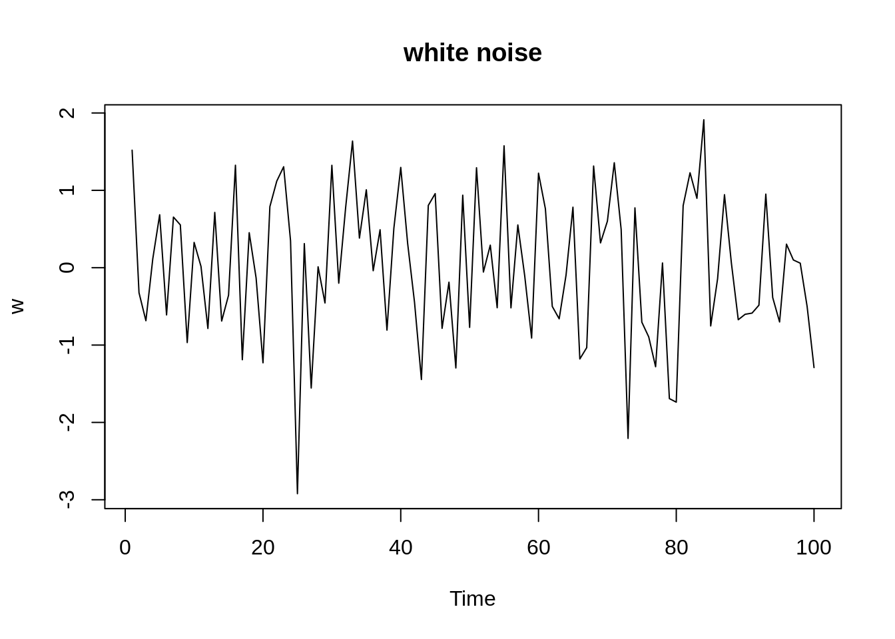
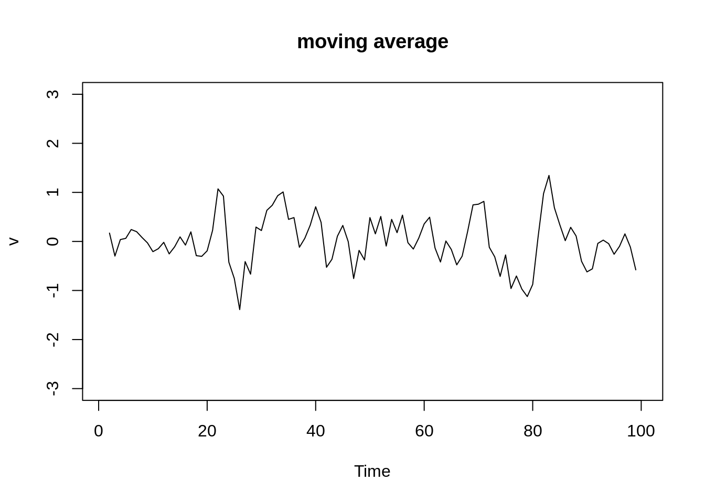
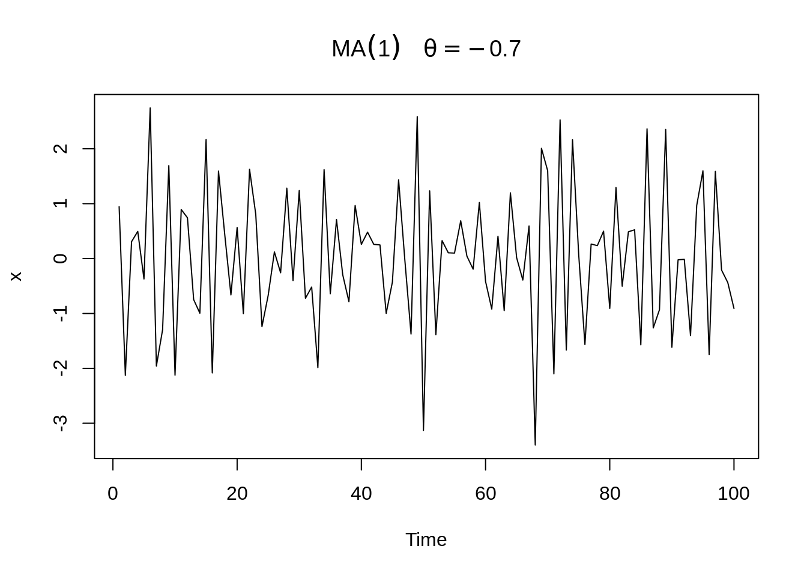

Chapter 27 Introdution to Time Series Analysis
Yiyuan Xu
27.1 Overview
This text briefly talks about basic ideas of time series analysis. Meanwhile, several simple time series are roughly described and shown in pictures. Finally, we explored a few tools such as mean function to analyze and predict time series.
27.2 Introduction
The analysis of data that have been observed at different time points causes new problems in statistical modeling and inference. These data points taken over time may have an internal structure such as autocorrelation, trend or seasonal variation, which restricts the applicability of some conventional statistical models that assume adjacent observations are independent. Time series analysis, however, is a systematic approach to solve mathematical and statistical problems posed by the internal structure.
27.2.1 Example
plot(jj, type="o", main = "Average global temperature deviations (1880–2015) in degrees Celsius",ylab="Quarterly Earnings per Share")
The data are the global land–ocean temperature deviations (1880-2015), measured in degrees centigrade, from the 1951-1980 average. From the data, we can see that there is an obvious upward trend during the later twentieth century. This observation has been used as one of arguments for the global warming hypothesis. Except the overall upward trend, there are also some other peaks that we can question and analyze. Time series analysis provides tools and models to answer those questions of interest exposed by real experimental data taken from different subject areas.
27.3 Simple Time Series
The main goal of time series analysis is to construct mathematical models to provide plausible descriptions for observed data. There are many time series models we can use and fit to understand the underlying structures of observed data and do forecasting, monitoring or feedback and feedforward control. Here, some simple time series are listed below.
27.3.1 Definition
Before looking at different series, a clear definition of time series may be helpful. A time series is an ordered sequence of random variables obtained in time. For example, in a time series \(x_1, x_2, x_3\), …, the random variable \(x_1\) represents the value at the first time period, \(x_2\) represents the value at the second time period and so on. In this text, we will use \(\{x_t\}\) to denote a time series where t is time here and typically discrete (\(t = 0, ±1, ±2\), …, or some subset of integers).
27.3.2 White Noise
White noise, \(w_t\), is a collection of uncorrelated random variables with mean 0 and variance \(\sigma^{2}_w\). This process can be denoted as \(w_t \sim wn(0,\sigma^{2}_w)\). Sometimes the noise is independent and identically distributed (iid) with mean 0 and variance \(\sigma^{2}_w\). We call this white independent noise or iid noise and \(w_t \sim iid(0,\sigma^{2}_w)\). There is also a useful white noise series named Gaussian white noise where \(w_t\) are independent normal random variables with mean 0 and variance \(\sigma^{2}_w\) i.e. \(w_t \sim iid N(0,\sigma^{2}_w)\).
The graph below shows a collection of 100 independent normal random variables with mean 0 and variance \(\sigma^{2}_w=1\).

27.3.3 Moving Average of White Noise
We can replace the white noise \(w_t\) by a moving average smoothing the series. For instance, a moving average of white noise using three terms (current and immediate neighbors in the past and future) is \[v_t=\frac{1}{3}(w_{t-1}+w_t+w_{t+1})\]
The graph below uses the Gaussian white noise before by taking the average of three items and shows a smoother version of the white noise one.

27.3.4 Random Walk with Drift
A random walk with drift is given by \[x_t= δ+x_{t-1}+w_t\] for t = 1, 2, …, with \(x_0 = 0\) and \(w_t\) is white noise. \(δ\) here is the drift and when it is zero, this series is simply called a random walk. Note that when \(δ=0\), the value at time t is just the value at time t-1 plus a complete random movement determined by \(w_t\).
We can also rewrite the equation as a cumulative sum of white noise \[x_t= δt+\sum^{t}_{j=1}w_j \]
w = rnorm(100)
x = cumsum(w)
wd = w +.2
xd = cumsum(wd)
plot.ts(xd, ylim=c(-20,30), main="random walk", ylab='')
lines(x, col=4)This graph depicts two random walks with drift \(δ=0.2\) (black line) and \(δ=0\) (blue line). Here,\(\sigma^2_w =1\) for the white noise.
27.3.5 AR(1)
An autoregressive model of order 1 (AR(1)) is of the form \[x_t= \phi x_{t-1}+w_t\] where \(w_t \sim wn(0,\sigma^{2}_w)\), \(|\phi|<1\) is a constant and \(x_t\) is weakly stationary i.e. its mean function is constant and its autocovariance function depends only on the difference between two time period \(t_1\) and \(t_2\). The definitions of mean and autocovariance will be clarified later.
We can also write this equation as \[x_t= \phi x_{t-1}+w_t=\phi(\phi x_{t-2}+w_{t-1})+w_t \\ = ϕ^2 x_{t-2}+ϕw_{t-1}+ w_t=⋯\\ = \phi^k x_{t-k}+ \sum_{j=0}^{k-1}\phi^j w_{t-j}= \sum_{j=0}^{\infty} \phi^j w_{t-j}\]
Here, graphs of AR(1) with \(\phi=±0.9\), \(\sigma_w^2=1\) is provided.

The series with \(\phi=.9\) is smoother than the series with \(\phi = −.9\). We will talk about the reasons why these two have different levels of smoothness later when we go into ACF.
27.3.6 MA(1)
A moving average model of order 1 (MA(1)) is of the form \[ x_{t}=w_{t}+\theta w_{t-1} \]
where \(w_t \sim wn(0,\sigma^{2}_w)\) and \(\theta\) is a parameter. Notice that \(x_t\) here is stationary for any values of \(\theta\).
Here, graphs of MA(1) with \(\theta=±0.7\), \(\sigma_w^2=1\) is provided.
plot(arima.sim(list(order=c(0,0,1), ma=.7), n=100), ylab="x",
main=(expression(MA(1)~~~theta==+.7)))
plot(arima.sim(list(order=c(0,0,1), ma=-.7), n=100), ylab="x",
main=(expression(MA(1)~~~theta==-.7)))
Similar to AR(1), the series with \(\theta=.7\) is smoother than the series with \(\theta = −.7\).
27.4 Measures of Dependence
There are many informative measures to describe data and make people know more about the internal structure and correlation of the data. In this text, we will talk about mean function, autocovariance function and autocorrelation function (ACF).
27.4.1 Mean Function
For a time series \(x_t\), its mean function is defined as \[\mu_{x_t}= E(x_t )= ∫_{-∞}^∞ xf_t (x)dx\]
27.4.2 Autocovariance Function
The autocovariance function is defined as \[ \gamma_{x}(s, t)=\operatorname{cov}\left(x_{s}, x_{t}\right)=E\left[\left(x_{s}-\mu_{s}\right)\left(x_{t}-\mu_{t}\right)\right] \]
where s,t are two time points. The autocovariance function measures the linear dependence between values at two different time points in the same time series. If \(\gamma_x (s,t)=0\), \(x_s\) and \(x_t\) are not linearly related. Also, very smooth time series will tend to have a large autocovariance function.
27.4.3 Autocorrelation Function (ACF)
The autocorrelation function is defined as \[ \rho(s, t)=\frac{\gamma(s, t)}{\sqrt{\gamma(s, s) \gamma(t, t)}} \]
The ACF shows the linear predictability of the value at time t using the value at time s in the time series. The value of ACF is between -1 and 1. For example, if \(x_t=β_0+β_1 x_s\) and we can perfectly predict \(x_t\) from \(x_s\), ACF will be +1 when \(β_1>0\) and -1 when \(β_1<0\). In this way, we can roughly forecast \(x_t\) from \(x_s\).
27.4.4 Three Measures for Simple Time Series Above
27.4.4.1 White Noise \(w_t \sim wn(0,\sigma^{2}_w)\)
27.4.4.1.1 Mean Function:
\[E(w_t)=0\]
27.4.4.1.2 Autocovariance function:
\[ \gamma(s, t)=\left\{\begin{array}{c} 0, \text { if } t \neq s \\ \sigma_{w}^{2}, \text { if } t=s \end{array}\right. \]
27.4.4.1.3 ACF:
\[ \rho(s, t)=\left\{\begin{array}{ll} 0, & \text { if } t \neq s \\ 1, & \text { if } t=s \end{array}\right. \]
27.4.4.2 Moving Average of White Noise Using Three Terms \(v_t=\frac{1}{3}(w_{t-1}+w_t+w_{t+1})\)
27.4.4.2.1 Mean Function:
\[E(v_t)=0\]
27.4.4.2.2 Autocovariance function:
\[ \gamma(s, t)=\left\{\begin{array}{ll} \frac{3}{9} \sigma_{w}^{2}, & \text { if } s=t \\ \frac{2}{9} \sigma_{w}^{2}, & \text { if }|s-t|=1 \\ \frac{1}{9} \sigma_{w}^{2}, & \text { if }|s-t|=2 \\ 0, & \text { if }|s-t|>2 \end{array}\right. \]
27.4.4.2.3 ACF:
\[ \rho(s, t)=\left\{\begin{array}{ll} 1, & \text { if } s=t \\ \frac{2}{3}, & \text { if }|s-t|=1 \\ \frac{1}{3}, & \text { if }|s-t|=2 \\ 0, & \text { if }|s-t|>2 \end{array}\right. \]
27.4.4.3 Random Walk with Drift \(x_t= δt+\sum_{j=1}^t w_j\)
27.4.4.3.1 Mean Function:
\[E(x_t )= δt\]
27.4.4.3.2 Autocovariance function with drift = 0:
\[ \gamma(s, t)=\min (s, t) \sigma_{w}^{2} \]
27.4.4.3.3 ACF with drift = 0:
\[ \rho(s, t)=\frac{\min (s, t)}{\sqrt{s t}} \]
27.4.4.4 AR(1) \(x_t= \phi x_{t-1}+w_t\)
27.4.4.4.1 Mean Function:
\[E(x_t)=0\]
27.4.4.4.2 Autocovariance function:
\[ \gamma(h)=\frac{\sigma_{w}^{2} \phi^{h}}{1-\phi^{2}}, h \geq 0 \]
Since the time series is weakly stationary, \(γ(0,h)= γ(h,0)= γ(t,t+h)= γ(s,s+h)=γ(h)\).
27.4.4.4.3 ACF:
\[ \rho(h)=\phi^{h}, h=0,1,2, \ldots \]
Take a look at the ACF of AR(1) when \(ϕ= 0.9\)
Take a look at the ACF of AR(1) when \(ϕ= -0.9\)

From these two graphs, we can find out that when \(\phi\) is positive, data at contiguous time points will be positively correlated with each other and close to each other. When \(\phi\) is negative, data at contiguous time points will be negatively correlated with each other. If one observed data is positive, then the next observed data will be negative. This sample path will be choppy. This is the reason why we will have a smoother sample path when \(\phi\) is positive than when \(\phi\) is negative before.
27.4.4.5 MA(1) \(x_{t}=w_{t}+\theta w_{t-1}\)
27.4.4.5.1 Mean Function:
\[E(x_t)=0\]
27.4.4.5.2 Autocovariance function:
\[ \gamma(h)=\left\{\begin{array}{ll} \left(1+\theta^{2}\right) \sigma_{w}^{2} & h=0 \\ \theta \sigma_{w}^{2} & h=1 \\ 0 & h>1 \end{array}\right. \]
27.4.4.5.3 ACF:
\[ \rho(h)=\left\{\begin{array}{ll} 1 & h = 0\\ \frac{\theta}{\left(1+\theta^{2}\right)} & h=1 \\ 0 & h>1 \end{array}\right. \]
Take a look at the ACF of MA(1) when \(\theta= 0.7\)

Take a look at the ACF of MA(1) when \(\theta= -0.7\)
We can see that ACF will be around zero when \(h>1\). The only difference is that when \(h=1\), the value of ACF is positive if \(\theta > 0\) and negative if \(\theta < 0\).
27.4.5 Application
These measures are good ways to analyze data and find suitable time series models that fit the data. Here is a simple example. The data shown in the image below records the annual precipitation (in inches) in Los Angeles from 1878 to 1992 and its ACF.


The ACF is 1 only when \(h=0\), and for other values of h, the values of ACF are near zero. It is very similar to the ACF of white noise with mean 0 and variance 1. We then create a white noise time series with 100 data and take a look at the ACF.

Comparing the ACF of white noise and the ACF of the LA rain data, we can get a rough assumption that the LA rain time series may be a random and normal time series just like the white noise one. Although other measures need to be calculated to prove this data is white noise, the ACF values here do give us some ideas about how to analyze data. Next, if it is white noise, we can use a predict function to forecast future data though it does not have much meaning to do predictions by fitting the white noise model since each white noise data point is iid and random.
27.5 Reference
https://online.stat.psu.edu/stat510/lesson/1/1.2
https://www.itl.nist.gov/div898/handbook/pmc/section4/pmc4.htm
Shumway, R. H., & Stoffer, D. S. (2017). Time series analysis and its applications: With R examples. Cham, Switzerland: Springer.